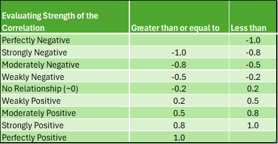

####################################
# Project name: Covariance and Measures of Association
# Data used: Debt_Payments.csv
# Libraries used: tidyverse, ggplot2
####################################10 Correlation Analysis
- The main goal of this lesson is to understand and conduct correlation analysis and interpret its results. In doing so, we will examine Pearson’s r correlation coefficient and learn how to conduct and interpret an inferential statistical test using this common statistic.
library(tidyverse)
library(ggplot2)10.0.1 Lesson Objectives
- Compute and interpret Pearson’s r correlation coefficient.
- Conduct an inferential statistical test for Pearson’s r correlation coefficient.
10.0.2 Consider While Reading
- In the lesson, we are looking at inference for correlation. We will learn how to conduct a correlation test. This will close the loop on scatterplots, which we learned in the Data Visualization lesson help us describe visually a relationship between variables. Consider what we learned and perhaps revisit the scatterplot lecture notes to then determine how visualizations can help in making inferences alongside regression and correlation results.
10.1 Covariance
- Covariance (\(s_{xy}\) or \(cov_{xy}\)) is a numerical measure that describes the direction of the linear relationship between two variables, x and y and reveals the direction of that linear relationship.
- The formula for covariance is as follows:
- \(cov_{xy} = \sum^n_{i=1}(x_i-m_x)*(y_i-m_y)/(n-1)\)
- Where \(x_i\) and \(y_i\) are the observed values for each observation, \(m_x\) and \(m_y\) are the mean values for each variable, \(i\) represents an individual observation, and \(n\) represents the sample size.
x <- c(3, 8, 5, 2)
y <- c(12, 14, 8, 4)
devX <- x - mean(x)
devY <- y - mean(y)
covXY <- sum(devX * devY)/(length(x) - 1)
covXY[1] 8.333333# We can verify this by using cov() function in R.
cov(x, y)[1] 8.33333310.2 Correlation Coefficient
- A correlation coefficient (\(r_{xy}\)) describes both the direction and strength of the relationship between \(x\) and \(y\). \(r_{xy} = cov_{sy}/(s_xs_y)\) or using the standardized formula in the book:
- \(r_{xy} = \sum^n_{i=1}(z_x*z_y)/(n-1)\)
# Calculated manually
covXY/(sd(x) * sd(y))[1] 0.7102387# We can verify this by using cor() function in R.
cor(x, y)[1] 0.710238710.2.1 Rules for the Correlation Coefficient
- The correlation coefficient has the same sign as the covariance; however, its value ranges between −1 and +1 whereas \(-1 \le r_{xy} \le +1\).
- The absolute value of the coefficient reflects the strength of the correlation. So a correlation of −.70 is stronger than a correlation of +.50.
10.3 Interpreting the Direction of the Correlation
- Negative correlations occur when one variable goes up and the other goes down.
- No correlation happens when there is no discernible pattern in how two variables vary.
- Positive correlations occur when one variable goes up, and the other one also goes up (or when one goes down, the other one does too); both variables move together in the same direction.
10.3.1 Scatterplots to Visualize Relationship
Let’s do an example to first visualize the data, and then to calculate the correlation coefficient.
First, read in a .csv called DebtPayments.csv. This data set has 26 observations and 4 variables:
- A character variable with a bunch of metropolitan areas listed;
- An integer numeric debt;
- A numeric variable Income;
- A numeric variable Unemployment.
Debt_Payments <- read.csv("data/DebtPayments.csv")
str(Debt_Payments)'data.frame': 26 obs. of 4 variables:
$ Metropolitan.area: chr "Washington, D.C." "Seattle" "Baltimore" "Boston" ...
$ Debt : int 1285 1135 1133 1133 1104 1098 1076 1045 1024 1017 ...
$ Income : num 103.5 81.7 82.2 89.5 75.9 ...
$ Unemployment : num 6.3 8.5 8.1 7.6 8.1 9.3 10.6 12.4 12.9 9.7 ...Next, plot the relationship between 2 continuous variables.
- There are a few ways to write the plot command using ggplot. We went over these in the Data Visualization lesson. Again we said:
- Layer 1: ggplot() command with aes() command directly inside of it pointing to x and y variables.
- Layer 2: geom_point() command to add the observations as indicators in the chart.
- Layer 3 or more: many other optional additions like labs() command (for labels) or stat_smooth() command to generate a regression line.
Debt_Payments %>% ggplot(aes(Income, Debt)) + geom_point(color = "#183028", shape = 2) + stat_smooth(method = "lm", color = "#789F90") + theme_minimal()In the above plot, there is a strong positive relationship (upward trend) that should be confirmed with a correlation test.
In a second example below, we look at Unemployment as the X variable. This scatterplot is much more difficult to use in determining whether the correlation will be significant. It looks negative, but there is not a strong linear trend to the data. This will also need to be confirmed with a correlation test.
Debt_Payments %>%
ggplot(aes(Unemployment, Debt)) + geom_point(color = "#183028", shape = 2) +
stat_smooth(method = "lm", color = "#789F90") + theme_minimal()- In many scatterplots using big data, the observations are too numerous to see a good relationship. In that case, the statistical test can trump this visual aid. However, in a lot of cases the scatterplot does help visualize the relationship between 2 continuous variables.
10.3.2 Interpreting the Strength of the Correlation
- Statisticians differ on what is called a strong correlation versus weak correlation, and it depends on the context. A .9 may be required for a strong correlation in one field, and a .5 in another. Generally speaking in business, the absolute value of a correlation .8 or above is considered strong, between .5 and .8 is considered moderate, and between a .2 and .5 is considered weak.
- The following is consistent with what is most generally used:

10.4 Interpreting the Significance of the Correlation
- Correlation values should be tested alongside a p-value to confirm whether or not there is a correlation. The null is tested using a t-distribution specifically testing whether \(r = 0\) or not, like the one-sample t-test section from the lesson 6.
- The null and alternative are listed below.
- \(H_0\): There is no relationship between the two variables (\(r = 0\)).
- \(H_A\): There is a relationship between the two variables (\(r \neq 0\)).
- Even small correlations can be significant: In large datasets, even a small correlation, like .1, can be statistically significant due to the increased power that comes with a high sample size. It’s important to interpret both the strength of the correlation and its practical significance in context.
10.5 Statistical significance answers the question: “Is the effect real?“
Statistical Significance:
A result is statistically significant if it is unlikely to have occurred by random chance, given a pre-defined threshold (usually p < 0.05).
With larger sample sizes, even very small effects can become statistically significant because larger samples reduce variability. For example, a correlation of 0.1 can be statistically significant with enough data.
Practical Significance:
Practical significance answers the question: “Is the effect meaningful?“
Practical significance refers to the real-world importance or relevance of a result. It asks, “Does this effect matter in practice?“
Even if a result is statistically significant, it may not be large enough to have a meaningful impact on business decisions or outcomes.
10.5.1 cor.test() Command
- The cor() command gives you just the correlation coefficient. This command can be useful if you are testing many correlations at one time. In the below statement, I can use \(cor(Variable1, Variable2)\) to see the correlation between 2 continuous variables.
cor(Debt_Payments$Income, Debt_Payments$Debt)[1] 0.8675115- The cor.test() command tests the hypothesis whether \(r=0\) or not. This command comes with a p-value and t-test statistic (along with the correlation coefficient).
cor.test(Debt_Payments$Income, Debt_Payments$Debt)
Pearson's product-moment correlation
data: Debt_Payments$Income and Debt_Payments$Debt
t = 8.544, df = 24, p-value = 9.66e-09
alternative hypothesis: true correlation is not equal to 0
95 percent confidence interval:
0.7231671 0.9392464
sample estimates:
cor
0.8675115 - This test shows a strong positive correlation of .8675 (>.8) which is significant. Our p-value is 9.66e-09 or < .001 alpha level. This suggests that we reject the null hypothesis and support the alternative that \(r \neq 0\) which confirms a correlation is present.
- We also see a confidence interval listed. It suggests that we are 95% confident that the correlation is between .723 and .939.
cor.test(Debt_Payments$Income, Debt_Payments$Unemployment)
Pearson's product-moment correlation
data: Debt_Payments$Income and Debt_Payments$Unemployment
t = -3.0965, df = 24, p-value = 0.004928
alternative hypothesis: true correlation is not equal to 0
95 percent confidence interval:
-0.7636089 -0.1852883
sample estimates:
cor
-0.5342931 - This test shows a moderate negative correlation of -.534 (<.5 and .8) which is significant. Our p-value is 0.004928 or < .01 alpha level. This suggests that we reject the null hypothesis and support the alternative that \(r \neq 0\) which confirms a correlation is present.
- We also see a confidence interval listed. It suggests that we are 95% confident that the correlation is between -.765 and -.185. This confidence interval is wider than the one listed above. This is due to the noise in the relationship we noted in the scatterplot - the correlation is weaker, the relationship does not look as linear, the confidence decreases. Even though this is true, we must note that we still found a significant correlation.
10.6 Limitations of Correlation Analysis
- To determine a causal model, you need the following:
- Significant Correlation: Statistically significant relationship between the variables.
- Temporal Precedence: Causal variable occurred prior to the other variable.
- Eliminate Alternate Variables: No other factors can account for the cause.
- Some limitations are as follows:
- The correlation coefficient captures only a linear relationship.
- The correlation coefficient may not be a reliable measure in the presence of outliers.
- Even if two variables are highly correlated, one does not necessarily cause the other.
- Note that a correlation is the first step in understanding causality.
10.7 Using AI
Use the following prompt on a generative AI, like chatGPT, to learn more about correlation analysis.
Explain the difference between covariance and correlation. How do you interpret the direction and strength of a correlation coefficient?”
What is covariance, and how does it describe the relationship between two variables? Provide an example with a simple dataset. Describe Pearson’s correlation coefficient. How do you calculate it, and what does it tell you about the relationship between two variables?
Explain how to create a scatterplot using ggplot2 in R to visualize the relationship between two continuous variables. How can you add a regression line to assess the linearity of the relationship?
How can you use the cor.test() function in R to conduct a hypothesis test for correlation? What do the p-value and confidence interval indicate in the context of correlation?
How do you interpret the strength and direction of a correlation? What is considered a strong, moderate, or weak correlation in the context of business data?
Explain the null and alternative hypotheses for correlation testing. How does the t-distribution play a role in testing the significance of a correlation coefficient?
What are some challenges of visualizing relationships between variables when dealing with big data, and how can statistical tests help when scatterplots are not effective?
Discuss the limitations of correlation analysis. Why is it important to be cautious when interpreting correlation as causation?
What are the key differences between correlation and causation? How can you determine if a correlation implies causality?
10.8 Summary
- In this lesson, we learned about correlation coefficient and how to evaluate a strong, moderate, or weak/positive or negative correlation. We also learned how to visualize a relationship using a scatterplot. We also learned how to test for a correlation being significant or not.